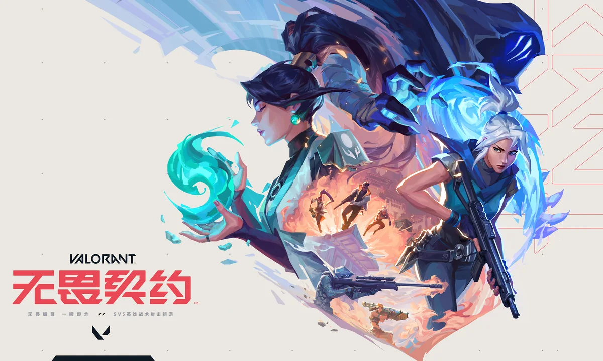
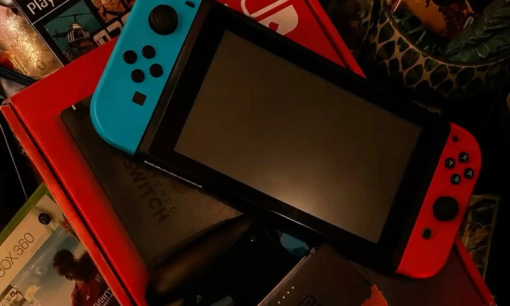

Videojuegos
Cómo empezar en Valorant: roles, economía y consejos para principiantes
Guía para empezar en Valorant: qué hace cada rol, cómo funcionan las rondas y la economía, y qué practicar antes de entrar al competitivo.
Juegos, componentes y guías para jugar en ordenador.
Lectura destacada
Guía para empezar en Valorant: qué hace cada rol, cómo funcionan las rondas y la economía, y qué practicar antes de entrar al competitivo.
Ordenadas por última actualización. Cada artículo muestra la fecha de revisión.

Una guía para vigilar calendarios de videojuegos y distinguir ventanas confirmadas de rumores y anuncios antiguos.

De fútbol y baloncesto a carreras y skate: juegos deportivos para distintos estilos, plataformas y niveles de simulación.

Guía para elegir un mando por ergonomía, conexión, compatibilidad, batería y accesibilidad, sin recomendar una talla única.

Juegos recientes para PC de géneros distintos, elegidos por diseño, personalidad y opciones de configuración, sin puntuaciones inventadas.

Juegos y ajustes para sacar partido a un PC modesto, con una guía para verificar requisitos y evitar promesas de rendimiento.

Juegos para PC que se pueden probar sin pagar por el acceso inicial, con atención a compras opcionales y requisitos de cuenta.
Explora la biblioteca por tema y formato.

Juegos para dos con estilos diferentes: campañas cooperativas, partidas locales, estrategia y competición amistosa.

Selección de juegos cooperativos con distintos ritmos, tamaños de grupo y formas de coordinarse, explicada con criterios editoriales.

Alternativas a Grand Theft Auto según lo que buscas: conducción, libertad, crimen, exploración o una ciudad llena de historias.

Mundos, campañas y juegos rejugables que pueden acompañarte durante mucho tiempo, con criterios para valorar si el contenido merece la pena.
A fecha de 22 de noviembre de 2026, Rockstar no ha anunciado una versión nativa de PC en la página oficial de GTA VI.

Una guía práctica para elegir gráfica, procesador, memoria y monitor según resolución, juegos y presupuesto.
Diez mundos abiertos de PC elegidos por libertad, ambientación y variedad de actividades, con consejos para elegir.
Juegos free-to-play recomendables y una guía clara sobre temporadas, compras opcionales y acceso online.
Una selección de juegos sociales para sofá y online, con notas sobre cross-play y tamaño de grupo.

Diez juegos con narración memorable y estilos diversos, seleccionados por construcción de personajes y ritmo.

Una selección de supervivencia para jugar en solitario o en grupo, con diferencias de tono y exigencia.

Ocho juegos de terror con enfoques distintos, desde supervivencia y exploración hasta multijugador cooperativo.

Una selección editorial de antagonistas memorables por motivación, presencia y relación con el jugador.